دليل المستخدم الميداني الشامل الموثق بالنماذج المصورة خطوة بخطوة
هذا الدليل أُعد بدقة فائقة لتدريب وإرشاد فريق العمل والمديرين على استخدام كافة أدوات وصفحات المنظومة بنسبة مائة بالمائة وبأعلى درجة من الاحترافية، متضمناً صور ونماذج الشاشات والنوافذ الفعلية التي يستخدمها الفريق يومياً، مع تفصيل كامل لكل عملية وحقل وأثر محاسبي ومخزني.
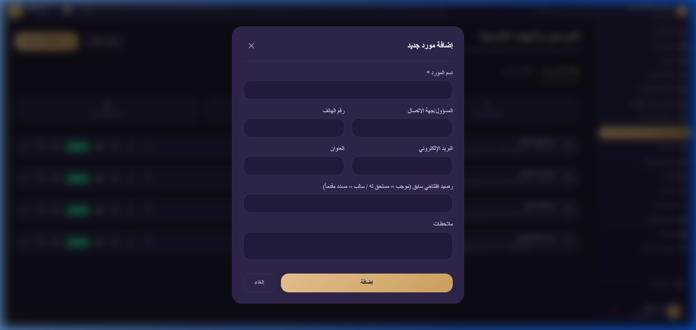
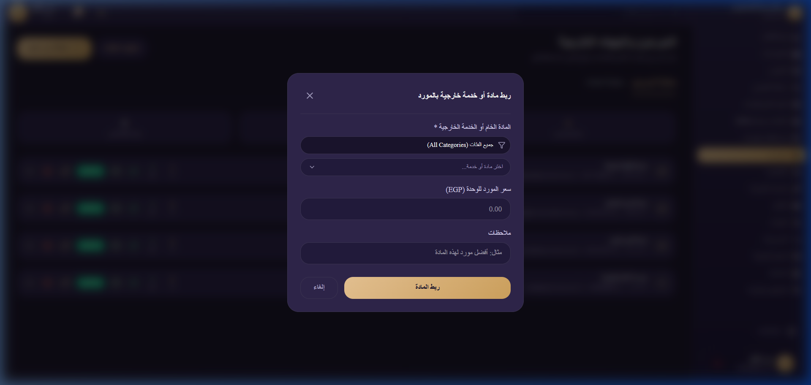
| التاريخ | نوع الحركة | رقم الإذن / المرجع | البيان والتفاصيل | دائن (له) | مدين (سددنا) | الرصيد المتبقي | طباعة حركة منفردة |
|---|---|---|---|---|---|---|---|
| ٢٠٢٦/٠٨/٠١ | رصيد افتتاحي | رصيد-٠١ | مديونية قديمة سابقة لتشغيل المنظومة | ٢٥,٠٠٠ ج.م | - | ٢٥,٠٠٠ ج.م | مستند رقمي |
| ٢٠٢٦/٠٨/١٥ | إذن شراء خامات | شراء-١٠٤ | توريد ٥٠ لوح خشب إم دي إف | ٤٢,٥٠٠ ج.م | - | ٦٧,٥٠٠ ج.م | مستند رقمي |
| ٢٠٢٦/٠٩/٠١ | سند سداد دفعة | سداد-٥٢ | سداد نقدي عبر إنستاباي - إشعار رقم ٨٩٤ | - | ٢٠,٠٠٠ ج.م | ٤٧,٥٠٠ ج.م | مستند رقمي |
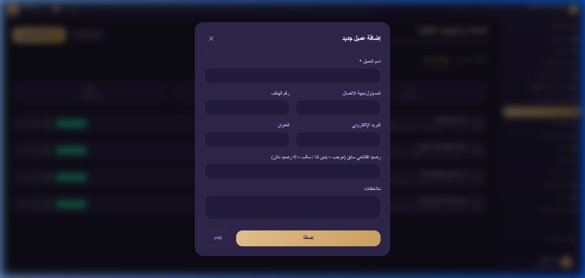
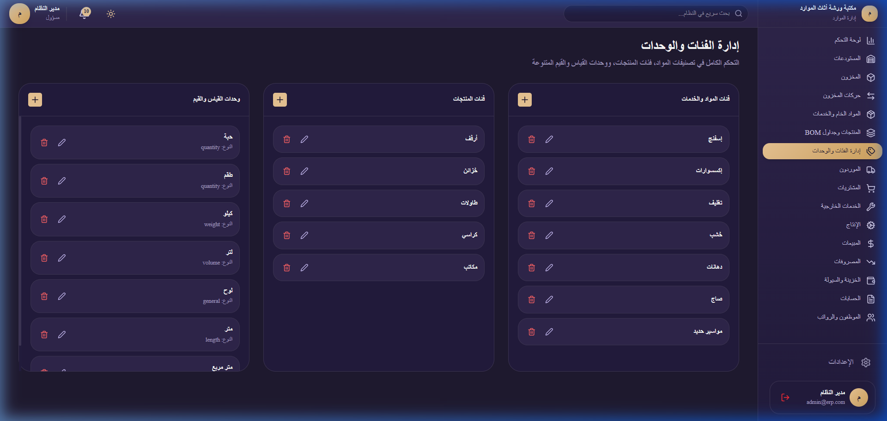
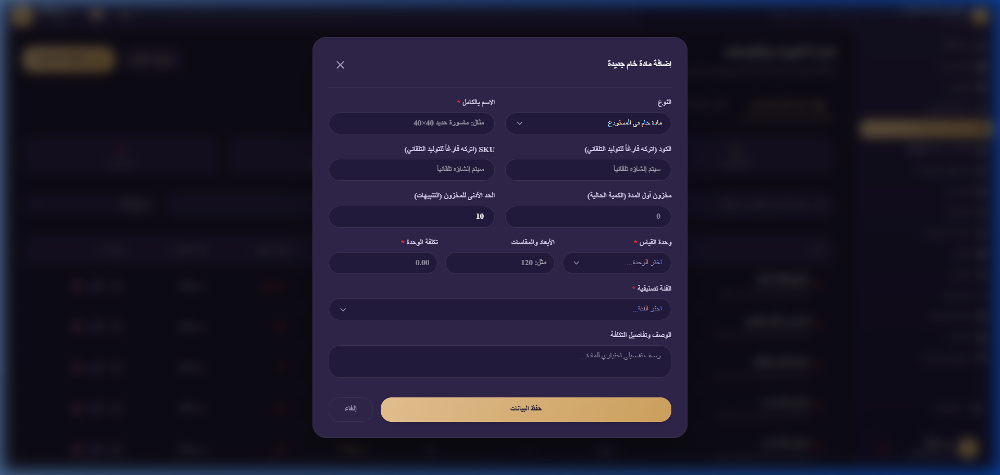
| المادة الخام المطلوبة | الكمية للوحدة | سعر تكلفة الوحدة | إجمالي تكلفة الخامة |
|---|---|---|---|
| خشب زان أحمر مبخر | ٠.٠٨ متر مكعب | ١٨,٠٠٠ ج.م | ١,٤٤٠ ج.م |
| قماش مخمل تركي مستورد | ٢.٥ متر | ١٦٠ ج.م | ٤٠٠ ج.م |
| إسفنج كثافة ٤٥ ممتاز | ٠.٥ لوح | ٤٥٠ ج.م | ٢٢٥ ج.م |
| أجرة مصنعية وتنجيد (عمالة بالقطعة) | ١ عملية | ٣٥٠ ج.م | ٣٥٠ ج.م |
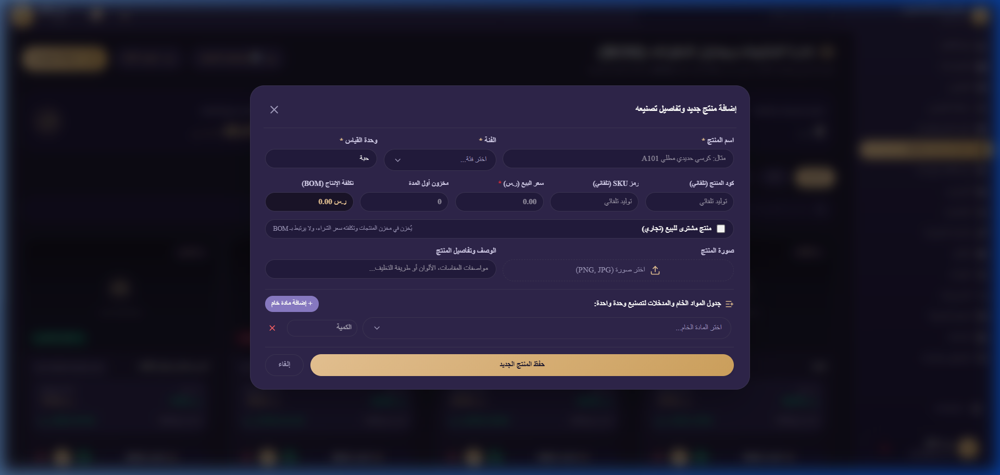
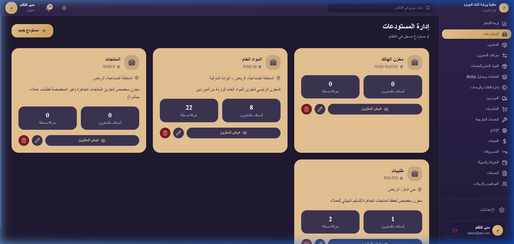
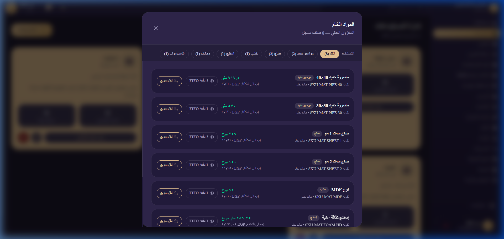
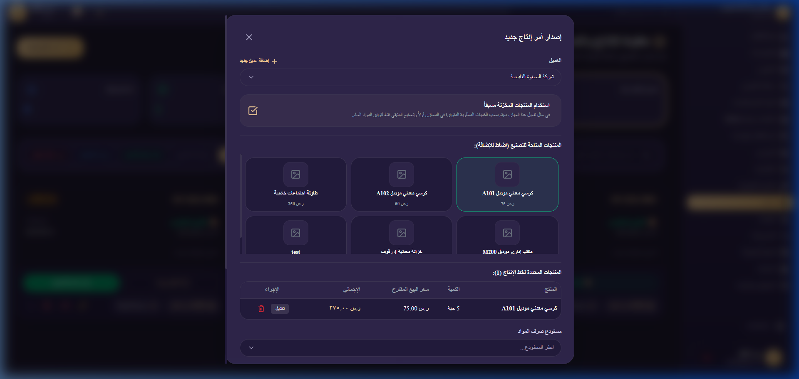
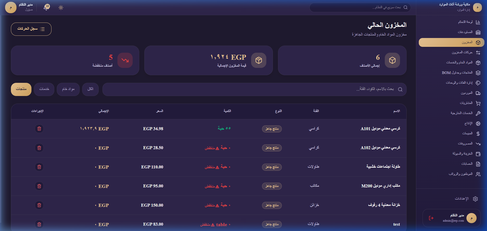
| نوع الصنف | اختيار المادة الخام | الكمية المباعة | سعر البيع المقترح (ج.م) | إجمالي السعر |
|---|---|---|---|---|
| مادة خام | لوح خشب إم دي إف ١٨ ملم إسباني | ١٥ لوحاً | ١,٠٦٠.٠٠ ج.م | ١٥,٩٠٠.٠٠ ج.م |
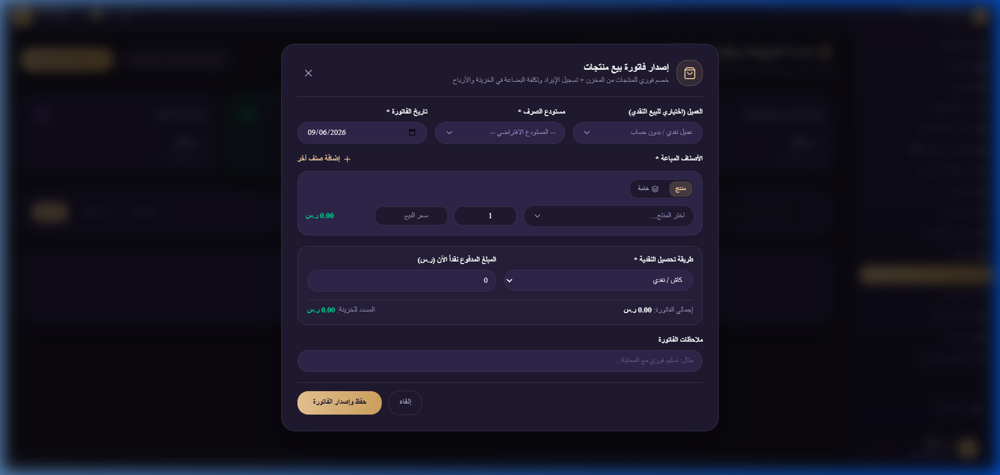
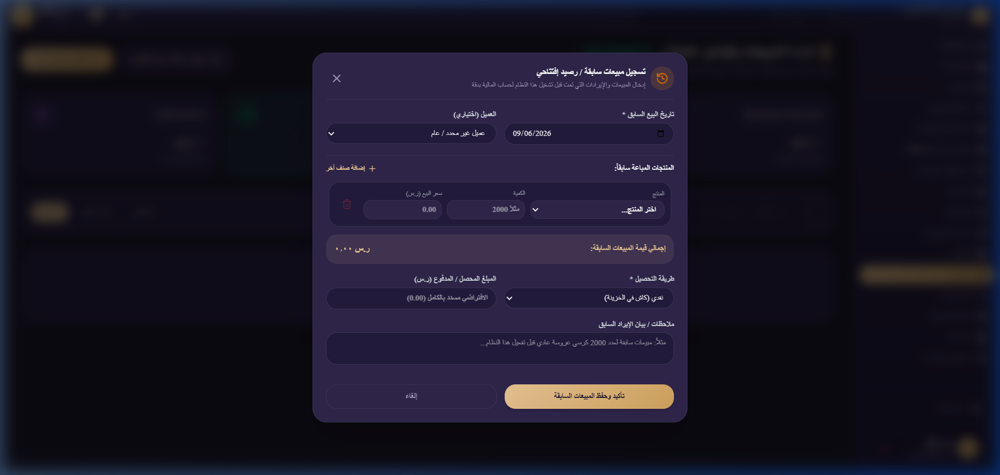
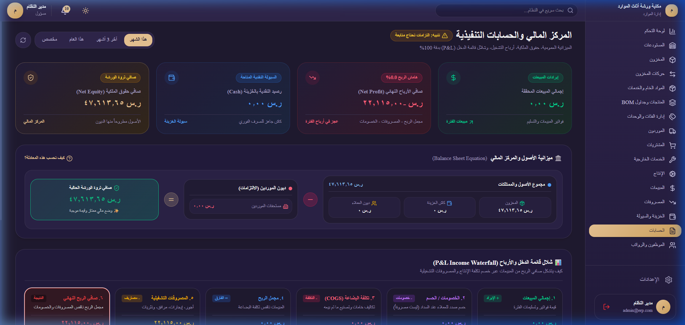
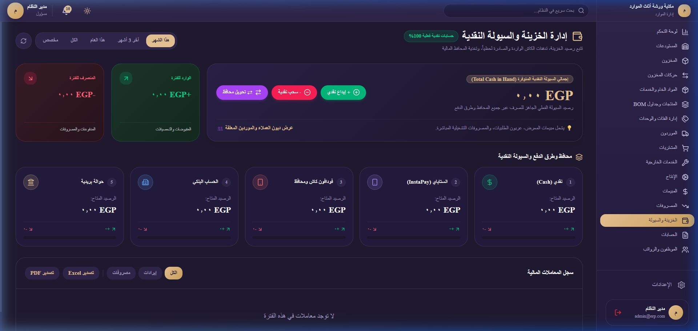
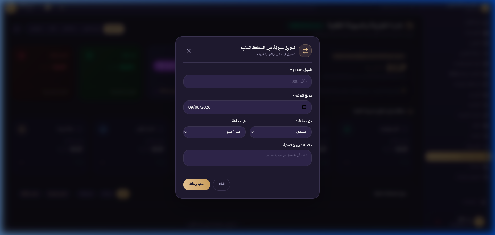
| اسم العامل | نظام العمل | مستحق الأسبوع الحالي | الرصيد القديم المتأخر | خيار الصرف المعتمد | المبلغ الصافي المنصرف |
|---|---|---|---|---|---|
| أحمد مصطفى (نجار) | يومية (١٨٠ ج.م/يوم) | ١,٠٨٠ ج.م | ٣٥٠ ج.م | صرف الحالي + القديم | ١,٤٣٠.٠٠ ج.م |
| سيد حسن (منجد) | بالقطعة (٣٥ ج.م/كرسي) | ١,٤٠٠ ج.م | صفر | صرف الأسبوع الحالي فقط | ١,٤٠٠.٠٠ ج.م |
| محمود علي (أستورجي) | مشترك (يومية + إنتاج) | ١,٢٥٠ ج.م | ٦٠٠ ج.م | صرف الحالي فقط (تأجيل القديم) | ١,٢٥٠.٠٠ ج.م |
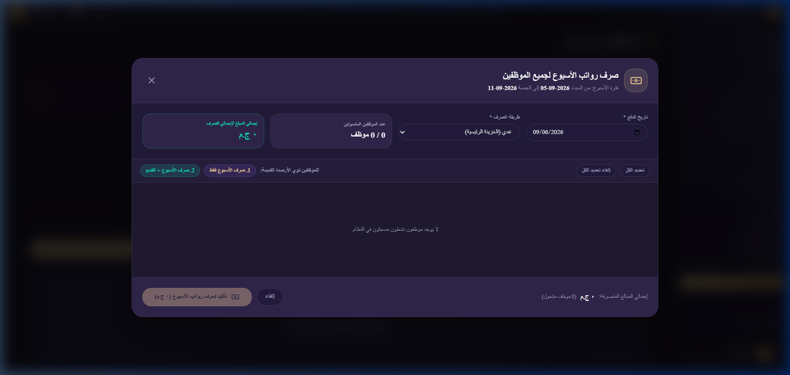
دليل المستخدم الشامل والنهائي - تم إعداده ليكون مرجعاً تشغيلياً رسمياً شاملاً بنسبة مائة بالمائة.